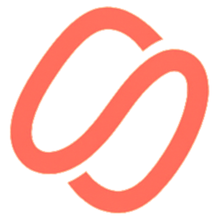
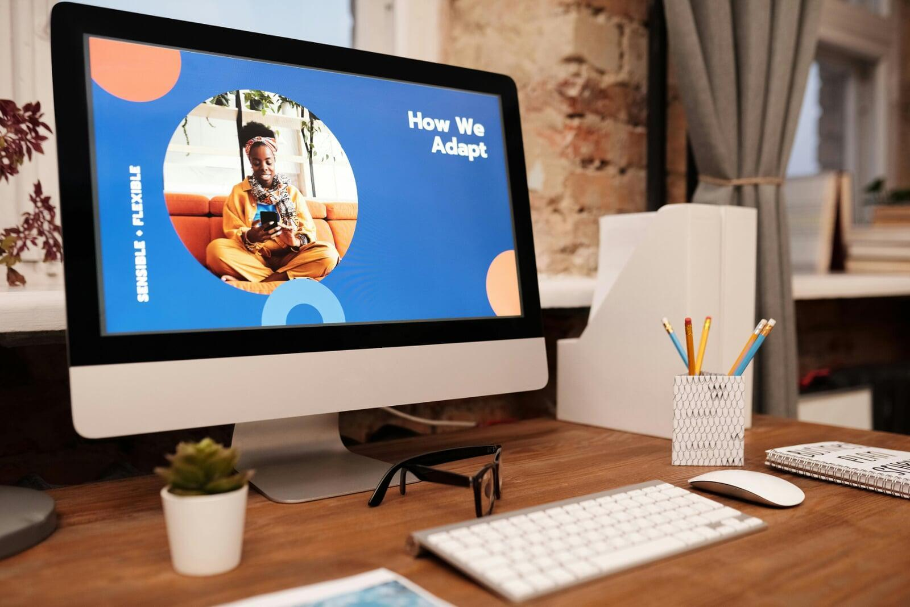

0%
of the workday goes to “work about work”: chasing status updates, searching for information and switching between apps.
Asana, Anatomy of Work Index

Verzent redesigns, automates and measures how your business runs, end to end. Your team spends less time on manual work, your costs go down, and every gain shows up in numbers you can defend.
Operations scorecard
Last 12 weeks vs. baseline
Hours recovered
0
+31% this quarter
Cost per order
$0
38% lower
Lead response
0 min
was 9 hours
Manual hours per week
Baseline 186 h
We work with the platforms your business already uses
Most companies do not lose money in one big mistake. They lose it in thousands of small ones: data typed twice, leads answered too late, reports built by hand every Friday. The research is clear about what that costs, and about what changes when it is fixed.
0%
of the workday goes to “work about work”: chasing status updates, searching for information and switching between apps.
Asana, Anatomy of Work Index
0x
more likely to qualify a lead when a company responds within the first hour instead of later.
Harvard Business Review
$0
returned for every dollar invested in a well implemented CRM.
Nucleus Research

0%
of small and medium businesses in Costa Rica report better efficiency after adopting AI tools.
Microsoft News, 2024
Move the sliders to match your team. The estimate uses conservative assumptions, and in the diagnostic we replace them with your real numbers.
Estimated annual savings
$0
We take ownership of the result. We map the process, choose and configure the technology, build it, train your people and track the numbers. Technology, AI included, is how we get there. Your results are the point.
We sit with the people who do the work, map every step, remove what should not exist and automate what is left. Orders, invoices, approvals, reminders and handoffs move on their own, and your team handles only the exceptions.
Metrics we moveHours per weekCycle timeError rateCost per transaction
Every lead captured, every follow up on time, every client conversation in one place. We implement or rescue your CRM, connect it to the channels your customers actually use and build the routines that turn it into revenue.
Metrics we moveLead response timeConversion rateRetentionRevenue per rep
One source of truth for the whole company. We define the KPIs that matter, clean and connect your data, and deliver live dashboards that replace the spreadsheet everyone builds by hand. Then we review them with you every month.
Metrics we moveTime to reportForecast accuracyMargin visibilityDecision speed
AI is one of the tools we use, applied where it pays off. Assistants that answer routine questions, classify requests, read documents and draft responses, built into your process with clear rules and a person in control.
Metrics we moveFirst response timeRequests resolvedCost per interactionSatisfaction
No handoffs between a consultant, a software vendor and an IT freelancer. One team owns the whole cycle, and the cycle never really ends: once a process is improved and measured, we look for the next one.
Two weeks inside your operation. We measure the baseline: hours, costs, errors and response times, process by process.
Weeks 1 and 2A proposal with fixed scope, fixed price and a clear ROI target. You know what you pay and what you get before you commit.
Week 3We implement, integrate and test in short cycles. You see working progress every week, not a big reveal at the end.
Weeks 4 to 10Training, documentation and support so your team actually uses what we built. Adoption is part of the job, not an extra.
Go liveA monthly scorecard compares every KPI against the baseline. You see exactly what the investment returned.
Every monthWith the first win paying for itself, we find the next process with the highest return and start the loop again.
ContinuousEvery company sits somewhere on this scale. Knowing where tells you which investment pays back first. Pick the stage that sounds most like your business today.
Spreadsheets, paper and chat threads hold the business together. Knowledge lives in a few people’s heads and every report is built by hand.
Signs you are here
Your next move
Start where it makes sense for you. Many clients begin with one project and continue with a monthly partnership once the first results are in.
Workshops and adoption programs so your people get real value from the tools you already pay for.
Best when the tools exist but nobody uses them well.
Plan a workshopComplete delivery. We own the outcome from the first diagnostic to go live, at a fixed scope and price.
Best for a clear problem that is costing you money now.
Start with a diagnosticA monthly partnership. We operate, monitor and improve your systems, and report the results every month.
Best when you want an operations team without hiring one.
Talk about a partnershipWe would rather be measured than believed.
Trust is earned with evidence. These are part of every agreement we sign.
Something else on your mind? Ask us directly.
No. We are an operations partner. We start from your business problem and choose the right mix of process changes, platforms, automation and AI to solve it. Sometimes the best answer involves very little new technology at all.
The diagnostic takes about two weeks, and most first projects go live within six to ten weeks. Because we measure a baseline first, you see the impact in your first monthly scorecard.
Projects have a fixed scope and a fixed price, agreed before we start. Monthly partnerships have a flat fee. Every proposal shows the expected return next to the price, so the decision is easy to justify internally.
Rarely. We start with what you already pay for and connect it properly. We only recommend new platforms when the numbers show they will pay for themselves.
Small and medium businesses that have outgrown spreadsheets and manual routines, typically with five to two hundred people. If your team is busy but growth feels harder than it should, we are a good fit.
We are based in Atlanta, Georgia and San José, Costa Rica, and work with clients across Latin America and the United States, in person or remotely, in English and Spanish.
Tell us where the friction is. In one conversation we will show you where the savings are, how big they could be and what it would take to capture them. No commitment required.
Atlanta, Georgia
San José, Costa Rica